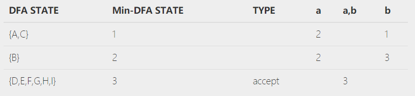

#NFA(Non-deterministic Finite Automata)
不确定有限自动机
构造 NFA 分成两步：画出每一个小单元的 NFA；将每一个小单元的 NFA 组合。
#小单元的 NFA
-
单个输入符号 a
-
连接运算 ab
-
选择运算 a|b 添加两个状态（选择运算开始状态和结束状态），在开始状态引两个路径通过 $\varepsilon$ 分别到两个单输入符号的 NFA，同时两个 NFA 都通过 $\varepsilon$ 到结束状态。
-
闭包运算 添加两个状态（闭包运算开始状态和结束状态），四条线：闭包运算开始状态到单元开始状态；单元结束状态到闭包运算结束状态；闭包运算开始状态到闭包运算结束状态；单元结束状态到单元开始状态。
-
(a|b)*
-
(ab)*

-
a*
-
#组合
在组合时，每一个小单元的 NFA 的开始状态不变，结束状态和下一个单元的开始状态合并。
(a|b)*ab
#NFA 转 DFA(Deterministic Finite Automata)
#两个概念
$\varepsilon-closure(\lbrace 1,2,...,n \rbrace)$：状态集 $\lbrace 1,2,...,n \rbrace$ 的 $\varepsilon$ 闭包。
上式的含义为求 1，2，...，n 状态仅通过零个或多个 $\varepsilon$ 可以到达的所有状态组成的集合。
$move(A,a)$：状态转换集。
A 中的所有状态通过 a 可以到达的所有状态组成的集合。
#以 $(a|b)*ab$ 为例
-
标记 A 集合
A 集合为开始状态（即 0 状态）的 $\varepsilon$ 闭包。
如 img-7 中，0 状态通过 $\varepsilon$ 可以到达 1 状态，7 状态；1 状态通过 $\varepsilon$ 又可以到达 2 状态和 4 状态；再加上本身：故 A={0, 1, 2, 4, 7}。
-
找出所有的输入字母
如 $(a|b)*ab$ 中，所有的输入字母为 {a, b}
-
根据输入字母寻找 A 集合的 $\varepsilon$ 闭包
如 img-7 中，A 集合中遇到 a 能发生状态转变的只有 2 和 7，转换到状态 3 和 8，所以 $move(A,a)$={3,8}；
然后求 $\varepsilon -closure(move(A,a))$，即 $\varepsilon -closure(\lbrace 3,8 \rbrace)$，可以得到结果为 {3, 8, 6, 1, 2, 4, 7}=B。
$move(A,b)$={5}，然后求 $\varepsilon -closure(\lbrace 5 \rbrace)$={5, 6, 1, 2, 4, 7}=C。
-
根据输入字母寻找所有新产生的集合的 $\varepsilon$ 闭包
$\varepsilon-closure(move(B,a))$={1,2,3,4,6,7,8}=B
$\varepsilon-closure(move(B,a))$={1,2,4,5,6,7,9}=D
$\varepsilon-closure(move(C,a))$={1,2,3,4,6,7,8}=B
$\varepsilon-closure(move(C,a))$={1,2,4,5,6,7}=C
$\varepsilon-closure(move(D,a))$={1,2,3,4,6,7,8}=B
$\varepsilon-closure(move(D,a))$={1,2,4,5,6,7}=C
包含 NFA 结束状态的集合为 DFA 结束状态，在例子中 D 状态为结束状态；A 状态为开始状态。
-
根据以上的计算结果画出 DFA

#DFA 的化简
-
加入死状态
如果一个 DFA 的转换函数不是全函数，那么必须加入一个死状态 $S_d$，死状态只有输入而没有输出。例如一个状态 S 对 a 没有转换，即 move(S,a)=$\varnothing$，则 $\varepsilon$-$closure(move(S,a))$=$S_d$。
-
把状态集分为接受状态集和非接受状态集
接受状态集指包含 NFA 结束状态的集合；非接受状态集指不包含 NFA 结束状态的状态集。例如，在例子中，可以把状态机划分为 {A,B,C} 和 {D}。
-
合并不可区分状态
对上一个步骤中的每一个集合的进行划分。如果集合中只有一个元素，那就不必再划分，如 {D}；如果集合中有多个元素，则寻找哪几个元素经过所有输入字母的转换后可以产生非本集合的元素，则将其分离成一个新的集合，如果两个状态通过所有的输入字母都转换到该集合的相同元素，那么它们不必再分。
-
对于上一个步骤中产生的新划分，重复上一步骤，直至不可再分。
-
如果结果中有死状态，则去除死状态，把所有到死状态的转换都改为无定义。
#栗子
其实可以把划分的过程看成是一个集合内部排异的过程。
栗子🌰：

首先根据接受和非接受划分为集合 {A,B,C} 和 {D,E,F,G,H,I}
对于集合 {A,B,C}，A 说我可以到 B 和 C，C 说我可以到 B 和 C，B 说我可以到 B 和 D。A 和 C 听了就不高兴了，我们两个不论怎么变都是到我们这个小集体里，你咋还跑出去了呢，我俩不和你好了。于是就分成了 {A,C} 和 {B}。A 和 C 又开始继续交流，但是他俩通过变换都跑到了 {A,C} 的外边，一起叛变，而且对于每一个输入符号，两人都是到同一个元素，只有这样，两人还是朋友，嗯，{A,C} 成为一个集合。
对于集合 {D,E,F,G,H,I}，兄弟六人怎么变都还是在这兄弟六人内部，于是六个人是一个团结的集体。
所以，原来的 9 个状态，经过划分之后，就变成了 3 个状态。

栗子🌰🌰：
再给一个栗子自己体会吧
化简之后：

#安利
安利一个求 NFA，DFA，Min-DFA 的工具：Toolbox